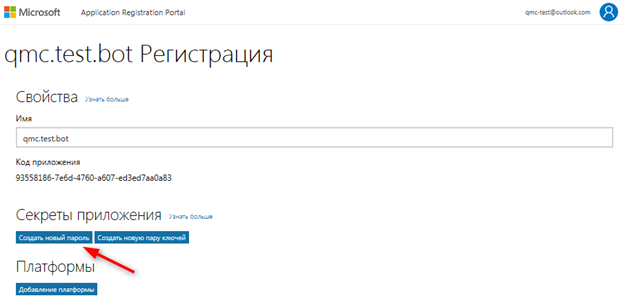
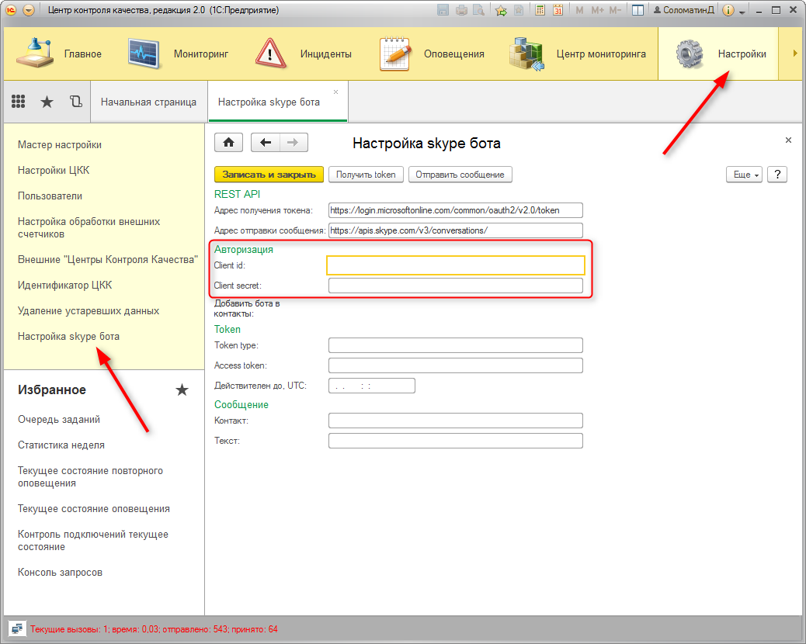

<!DOCTYPE html PUBLIC "-//W3C//DTD HTML 4.0 Transitional//EN"><html xmlns:v="urn:schemas-microsoft-com:vml"><head><meta content="text/html; charset=utf-8" http-equiv="Content-Type"></meta><link rel="stylesheet" type="text/css" href="v8help://service_book/service_style"></link><meta name="GENERATOR" content="MSHTML 11.00.9600.18125"></meta></head><body>
<blockquote style="MARGIN-RIGHT: 0px" dir="ltr">
<blockquote style="MARGIN-RIGHT: 0px" dir="ltr">
<p>Как создать SKYPE BOT'a и настроить его использование в ЦКК</p></blockquote></blockquote>
<p dir="ltr"><span style="FONT-SIZE: 11pt; FONT-FAMILY: &quot;Times New Roman&quot;; mso-fareast-font-family: &quot;Times New Roman&quot;; mso-ansi-language: RU; mso-fareast-language: RU; mso-bidi-language: AR-SA">1. Необходимо иметь учетную запись </span><span lang="EN-US" style="FONT-SIZE: 11pt; FONT-FAMILY: &quot;Times New Roman&quot;; mso-fareast-font-family: &quot;Times New Roman&quot;; mso-ansi-language: EN-US; mso-fareast-language: RU; mso-bidi-language: AR-SA">Microsoft. Для создания учетной записи Microsoft перейдите по ссылке <span style="FONT-SIZE: 11pt; FONT-FAMILY: &quot;Times New Roman&quot;; mso-fareast-font-family: &quot;Times New Roman&quot;; mso-ansi-language: RU; mso-fareast-language: RU; mso-bidi-language: AR-SA"><a href="https://www.microsoft.com/ru-ru/account">https://www.microsoft.com/ru-ru/account</a>.</span></span></p>
<p dir="ltr"><span lang="EN-US" style="FONT-SIZE: 11pt; FONT-FAMILY: &quot;Times New Roman&quot;; mso-fareast-font-family: &quot;Times New Roman&quot;; mso-ansi-language: EN-US; mso-fareast-language: RU; mso-bidi-language: AR-SA"><span style="FONT-SIZE: 11pt; FONT-FAMILY: &quot;Times New Roman&quot;; mso-fareast-font-family: &quot;Times New Roman&quot;; mso-ansi-language: RU; mso-fareast-language: RU; mso-bidi-language: AR-SA">2. <span style="FONT-SIZE: 11pt; FONT-FAMILY: &quot;Times New Roman&quot;; mso-fareast-font-family: &quot;Times New Roman&quot;; mso-ansi-language: RU; mso-fareast-language: RU; mso-bidi-language: AR-SA">Используя учетную запись </span><span lang="EN-US" style="FONT-SIZE: 11pt; FONT-FAMILY: &quot;Times New Roman&quot;; mso-fareast-font-family: &quot;Times New Roman&quot;; mso-ansi-language: EN-US; mso-fareast-language: RU; mso-bidi-language: AR-SA">Microsoft</span><span style="FONT-SIZE: 11pt; FONT-FAMILY: &quot;Times New Roman&quot;; mso-fareast-font-family: &quot;Times New Roman&quot;; mso-ansi-language: RU; mso-fareast-language: RU; mso-bidi-language: AR-SA"> необходимо зарегистрировать свое приложение для получения </span><span lang="EN-US" style="FONT-SIZE: 11pt; FONT-FAMILY: &quot;Times New Roman&quot;; mso-fareast-font-family: &quot;Times New Roman&quot;; mso-ansi-language: EN-US; mso-fareast-language: RU; mso-bidi-language: AR-SA">app</span><span lang="EN-US" style="FONT-SIZE: 11pt; FONT-FAMILY: &quot;Times New Roman&quot;; mso-fareast-font-family: &quot;Times New Roman&quot;; mso-ansi-language: RU; mso-fareast-language: RU; mso-bidi-language: AR-SA"> </span><span lang="EN-US" style="FONT-SIZE: 11pt; FONT-FAMILY: &quot;Times New Roman&quot;; mso-fareast-font-family: &quot;Times New Roman&quot;; mso-ansi-language: EN-US; mso-fareast-language: RU; mso-bidi-language: AR-SA">id</span><span lang="EN-US" style="FONT-SIZE: 11pt; FONT-FAMILY: &quot;Times New Roman&quot;; mso-fareast-font-family: &quot;Times New Roman&quot;; mso-ansi-language: RU; mso-fareast-language: RU; mso-bidi-language: AR-SA"> </span><span style="FONT-SIZE: 11pt; FONT-FAMILY: &quot;Times New Roman&quot;; mso-fareast-font-family: &quot;Times New Roman&quot;; mso-ansi-language: RU; mso-fareast-language: RU; mso-bidi-language: AR-SA">и </span><span lang="EN-US" style="FONT-SIZE: 11pt; FONT-FAMILY: &quot;Times New Roman&quot;; mso-fareast-font-family: &quot;Times New Roman&quot;; mso-ansi-language: EN-US; mso-fareast-language: RU; mso-bidi-language: AR-SA">client</span><span lang="EN-US" style="FONT-SIZE: 11pt; FONT-FAMILY: &quot;Times New Roman&quot;; mso-fareast-font-family: &quot;Times New Roman&quot;; mso-ansi-language: RU; mso-fareast-language: RU; mso-bidi-language: AR-SA"> </span><span lang="EN-US" style="FONT-SIZE: 11pt; FONT-FAMILY: &quot;Times New Roman&quot;; mso-fareast-font-family: &quot;Times New Roman&quot;; mso-ansi-language: EN-US; mso-fareast-language: RU; mso-bidi-language: AR-SA">secret</span><span style="FONT-SIZE: 11pt; FONT-FAMILY: &quot;Times New Roman&quot;; mso-fareast-font-family: &quot;Times New Roman&quot;; mso-ansi-language: RU; mso-fareast-language: RU; mso-bidi-language: AR-SA">.</span> Для регистрации приложения перейдите по ссылке <span lang="EN-US" style="FONT-SIZE: 11pt; FONT-FAMILY: &quot;Times New Roman&quot;; mso-fareast-font-family: &quot;Times New Roman&quot;; mso-ansi-language: EN-US; mso-fareast-language: RU; mso-bidi-language: AR-SA"><a href="https://apps.dev.microsoft.com">https://apps.dev.microsoft.com</a></span>.</span></span></p>
<blockquote style="MARGIN-RIGHT: 0px" dir="ltr">
<blockquote style="MARGIN-RIGHT: 0px" dir="ltr">
<p dir="ltr"><span lang="EN-US" style="FONT-SIZE: 11pt; FONT-FAMILY: &quot;Times New Roman&quot;; mso-fareast-font-family: &quot;Times New Roman&quot;; mso-ansi-language: EN-US; mso-fareast-language: RU; mso-bidi-language: AR-SA"><span style="FONT-SIZE: 11pt; FONT-FAMILY: &quot;Times New Roman&quot;; mso-fareast-font-family: &quot;Times New Roman&quot;; mso-ansi-language: RU; mso-fareast-language: RU; mso-bidi-language: AR-SA"><span style="FONT-SIZE: 11pt; FONT-FAMILY: &quot;Times New Roman&quot;; mso-fareast-font-family: &quot;Times New Roman&quot;; mso-ansi-language: RU; mso-fareast-language: RU; mso-bidi-language: AR-SA"><v:shapetype id="_x0000_t75" coordsize="21600,21600" o:spt="75" o:preferrelative="t" path="m@4@5l@4@11@9@11@9@5xe" filled="f" stroked="f"> </img></v:shapetype></span></span></span></p></blockquote></blockquote>
<p dir="ltr"><span lang="EN-US" style="FONT-SIZE: 11pt; FONT-FAMILY: &quot;Times New Roman&quot;; mso-fareast-font-family: &quot;Times New Roman&quot;; mso-ansi-language: EN-US; mso-fareast-language: RU; mso-bidi-language: AR-SA"><span style="FONT-SIZE: 11pt; FONT-FAMILY: &quot;Times New Roman&quot;; mso-fareast-font-family: &quot;Times New Roman&quot;; mso-ansi-language: RU; mso-fareast-language: RU; mso-bidi-language: AR-SA"><span style="FONT-SIZE: 11pt; FONT-FAMILY: &quot;Times New Roman&quot;; mso-fareast-font-family: &quot;Times New Roman&quot;; mso-ansi-language: RU; mso-fareast-language: RU; mso-bidi-language: AR-SA"><v:shapetype coordsize="21600,21600" o:spt="75" o:preferrelative="t" path="m@4@5l@4@11@9@11@9@5xe" filled="f" stroked="f">3. <span style="FONT-SIZE: 11pt">Выберите регистрацию </span><span lang="EN-US" style="FONT-SIZE: 11pt; mso-ansi-language: EN-US">Web </span><span style="FONT-SIZE: 11pt">приложения.</span></v:shapetype></span></span></span></p>
<blockquote style="MARGIN-RIGHT: 0px" dir="ltr">
<blockquote style="MARGIN-RIGHT: 0px" dir="ltr">
<p dir="ltr"><span lang="EN-US" style="FONT-SIZE: 11pt; FONT-FAMILY: &quot;Times New Roman&quot;; mso-fareast-font-family: &quot;Times New Roman&quot;; mso-ansi-language: EN-US; mso-fareast-language: RU; mso-bidi-language: AR-SA"><span style="FONT-SIZE: 11pt; FONT-FAMILY: &quot;Times New Roman&quot;; mso-fareast-font-family: &quot;Times New Roman&quot;; mso-ansi-language: RU; mso-fareast-language: RU; mso-bidi-language: AR-SA"><span style="FONT-SIZE: 11pt; FONT-FAMILY: &quot;Times New Roman&quot;; mso-fareast-font-family: &quot;Times New Roman&quot;; mso-ansi-language: RU; mso-fareast-language: RU; mso-bidi-language: AR-SA"><v:shapetype coordsize="21600,21600" o:spt="75" o:preferrelative="t" path="m@4@5l@4@11@9@11@9@5xe" filled="f" stroked="f"><span style="FONT-SIZE: 11pt"></img></span></v:shapetype></span></span></span></p></blockquote></blockquote>
<p dir="ltr"><span lang="EN-US" style="FONT-SIZE: 11pt; FONT-FAMILY: &quot;Times New Roman&quot;; mso-fareast-font-family: &quot;Times New Roman&quot;; mso-ansi-language: EN-US; mso-fareast-language: RU; mso-bidi-language: AR-SA"><span style="FONT-SIZE: 11pt; FONT-FAMILY: &quot;Times New Roman&quot;; mso-fareast-font-family: &quot;Times New Roman&quot;; mso-ansi-language: RU; mso-fareast-language: RU; mso-bidi-language: AR-SA"><span style="FONT-SIZE: 11pt; FONT-FAMILY: &quot;Times New Roman&quot;; mso-fareast-font-family: &quot;Times New Roman&quot;; mso-ansi-language: RU; mso-fareast-language: RU; mso-bidi-language: AR-SA"><v:shapetype coordsize="21600,21600" o:spt="75" o:preferrelative="t" path="m@4@5l@4@11@9@11@9@5xe" filled="f" stroked="f"><span style="FONT-SIZE: 11pt">4. <span style="FONT-SIZE: 11pt; FONT-FAMILY: &quot;Times New Roman&quot;; mso-fareast-font-family: &quot;Times New Roman&quot;; mso-ansi-language: RU; mso-fareast-language: RU; mso-bidi-language: AR-SA">Введите наименование приложения и </span><span lang="EN-US" style="FONT-SIZE: 11pt; FONT-FAMILY: &quot;Times New Roman&quot;; mso-fareast-font-family: &quot;Times New Roman&quot;; mso-ansi-language: EN-US; mso-fareast-language: RU; mso-bidi-language: AR-SA">email.</span></span></v:shapetype></span></span></span></p>
<blockquote style="MARGIN-RIGHT: 0px" dir="ltr">
<blockquote style="MARGIN-RIGHT: 0px" dir="ltr">
<p dir="ltr"><span lang="EN-US" style="FONT-SIZE: 11pt; FONT-FAMILY: &quot;Times New Roman&quot;; mso-fareast-font-family: &quot;Times New Roman&quot;; mso-ansi-language: EN-US; mso-fareast-language: RU; mso-bidi-language: AR-SA"><span style="FONT-SIZE: 11pt; FONT-FAMILY: &quot;Times New Roman&quot;; mso-fareast-font-family: &quot;Times New Roman&quot;; mso-ansi-language: RU; mso-fareast-language: RU; mso-bidi-language: AR-SA"><span style="FONT-SIZE: 11pt; FONT-FAMILY: &quot;Times New Roman&quot;; mso-fareast-font-family: &quot;Times New Roman&quot;; mso-ansi-language: RU; mso-fareast-language: RU; mso-bidi-language: AR-SA"><v:shapetype coordsize="21600,21600" o:spt="75" o:preferrelative="t" path="m@4@5l@4@11@9@11@9@5xe" filled="f" stroked="f"><span style="FONT-SIZE: 11pt"><span lang="EN-US" style="FONT-SIZE: 11pt; FONT-FAMILY: &quot;Times New Roman&quot;; mso-fareast-font-family: &quot;Times New Roman&quot;; mso-ansi-language: EN-US; mso-fareast-language: RU; mso-bidi-language: AR-SA"></img></span></span></v:shapetype></span></span></span></p></blockquote></blockquote>
<p dir="ltr"><span lang="EN-US" style="FONT-SIZE: 11pt; FONT-FAMILY: &quot;Times New Roman&quot;; mso-fareast-font-family: &quot;Times New Roman&quot;; mso-ansi-language: EN-US; mso-fareast-language: RU; mso-bidi-language: AR-SA"><span style="FONT-SIZE: 11pt; FONT-FAMILY: &quot;Times New Roman&quot;; mso-fareast-font-family: &quot;Times New Roman&quot;; mso-ansi-language: RU; mso-fareast-language: RU; mso-bidi-language: AR-SA"><span style="FONT-SIZE: 11pt; FONT-FAMILY: &quot;Times New Roman&quot;; mso-fareast-font-family: &quot;Times New Roman&quot;; mso-ansi-language: RU; mso-fareast-language: RU; mso-bidi-language: AR-SA"><v:shapetype coordsize="21600,21600" o:spt="75" o:preferrelative="t" path="m@4@5l@4@11@9@11@9@5xe" filled="f" stroked="f"><span style="FONT-SIZE: 11pt"><span lang="EN-US" style="FONT-SIZE: 11pt; FONT-FAMILY: &quot;Times New Roman&quot;; mso-fareast-font-family: &quot;Times New Roman&quot;; mso-ansi-language: EN-US; mso-fareast-language: RU; mso-bidi-language: AR-SA">5. <span style="FONT-SIZE: 11pt; FONT-FAMILY: &quot;Times New Roman&quot;; mso-fareast-font-family: &quot;Times New Roman&quot;; mso-ansi-language: RU; mso-fareast-language: RU; mso-bidi-language: AR-SA">После нажатия на кнопку </span><span lang="EN-US" style="FONT-SIZE: 11pt; FONT-FAMILY: &quot;Times New Roman&quot;; mso-fareast-font-family: &quot;Times New Roman&quot;; mso-ansi-language: EN-US; mso-fareast-language: RU; mso-bidi-language: AR-SA">Create</span><span lang="EN-US" style="FONT-SIZE: 11pt; FONT-FAMILY: &quot;Times New Roman&quot;; mso-fareast-font-family: &quot;Times New Roman&quot;; mso-ansi-language: RU; mso-fareast-language: RU; mso-bidi-language: AR-SA"> </span><span style="FONT-SIZE: 11pt; FONT-FAMILY: &quot;Times New Roman&quot;; mso-fareast-font-family: &quot;Times New Roman&quot;; mso-ansi-language: RU; mso-fareast-language: RU; mso-bidi-language: AR-SA">и создания приложения перейдите в </span><span lang="EN-US" style="FONT-SIZE: 11pt; FONT-FAMILY: &quot;Times New Roman&quot;; mso-fareast-font-family: &quot;Times New Roman&quot;; mso-ansi-language: EN-US; mso-fareast-language: RU; mso-bidi-language: AR-SA">My</span><span lang="EN-US" style="FONT-SIZE: 11pt; FONT-FAMILY: &quot;Times New Roman&quot;; mso-fareast-font-family: &quot;Times New Roman&quot;; mso-ansi-language: RU; mso-fareast-language: RU; mso-bidi-language: AR-SA"> </span><span lang="EN-US" style="FONT-SIZE: 11pt; FONT-FAMILY: &quot;Times New Roman&quot;; mso-fareast-font-family: &quot;Times New Roman&quot;; mso-ansi-language: EN-US; mso-fareast-language: RU; mso-bidi-language: AR-SA">Applications.</span></span></span></v:shapetype></span></span></span></p>
<blockquote style="MARGIN-RIGHT: 0px" dir="ltr">
<blockquote style="MARGIN-RIGHT: 0px" dir="ltr">
<p dir="ltr"><span lang="EN-US" style="FONT-SIZE: 11pt; FONT-FAMILY: &quot;Times New Roman&quot;; mso-fareast-font-family: &quot;Times New Roman&quot;; mso-ansi-language: EN-US; mso-fareast-language: RU; mso-bidi-language: AR-SA"><span style="FONT-SIZE: 11pt; FONT-FAMILY: &quot;Times New Roman&quot;; mso-fareast-font-family: &quot;Times New Roman&quot;; mso-ansi-language: RU; mso-fareast-language: RU; mso-bidi-language: AR-SA"><span style="FONT-SIZE: 11pt; FONT-FAMILY: &quot;Times New Roman&quot;; mso-fareast-font-family: &quot;Times New Roman&quot;; mso-ansi-language: RU; mso-fareast-language: RU; mso-bidi-language: AR-SA"><v:shapetype coordsize="21600,21600" o:spt="75" o:preferrelative="t" path="m@4@5l@4@11@9@11@9@5xe" filled="f" stroked="f"><span style="FONT-SIZE: 11pt"><span lang="EN-US" style="FONT-SIZE: 11pt; FONT-FAMILY: &quot;Times New Roman&quot;; mso-fareast-font-family: &quot;Times New Roman&quot;; mso-ansi-language: EN-US; mso-fareast-language: RU; mso-bidi-language: AR-SA"><span lang="EN-US" style="FONT-SIZE: 11pt; FONT-FAMILY: &quot;Times New Roman&quot;; mso-fareast-font-family: &quot;Times New Roman&quot;; mso-ansi-language: EN-US; mso-fareast-language: RU; mso-bidi-language: AR-SA"></img></span></span></span></v:shapetype></span></span></span></p></blockquote></blockquote>
<p dir="ltr"><span lang="EN-US" style="FONT-SIZE: 11pt; FONT-FAMILY: &quot;Times New Roman&quot;; mso-fareast-font-family: &quot;Times New Roman&quot;; mso-ansi-language: EN-US; mso-fareast-language: RU; mso-bidi-language: AR-SA"><span style="FONT-SIZE: 11pt; FONT-FAMILY: &quot;Times New Roman&quot;; mso-fareast-font-family: &quot;Times New Roman&quot;; mso-ansi-language: RU; mso-fareast-language: RU; mso-bidi-language: AR-SA"><span style="FONT-SIZE: 11pt; FONT-FAMILY: &quot;Times New Roman&quot;; mso-fareast-font-family: &quot;Times New Roman&quot;; mso-ansi-language: RU; mso-fareast-language: RU; mso-bidi-language: AR-SA"><v:shapetype coordsize="21600,21600" o:spt="75" o:preferrelative="t" path="m@4@5l@4@11@9@11@9@5xe" filled="f" stroked="f"><span style="FONT-SIZE: 11pt"><span lang="EN-US" style="FONT-SIZE: 11pt; FONT-FAMILY: &quot;Times New Roman&quot;; mso-fareast-font-family: &quot;Times New Roman&quot;; mso-ansi-language: EN-US; mso-fareast-language: RU; mso-bidi-language: AR-SA"><span lang="EN-US" style="FONT-SIZE: 11pt; FONT-FAMILY: &quot;Times New Roman&quot;; mso-fareast-font-family: &quot;Times New Roman&quot;; mso-ansi-language: EN-US; mso-fareast-language: RU; mso-bidi-language: AR-SA">6. <span style="FONT-SIZE: 11pt; FONT-FAMILY: &quot;Times New Roman&quot;; mso-fareast-font-family: &quot;Times New Roman&quot;; mso-ansi-language: RU; mso-fareast-language: RU; mso-bidi-language: AR-SA">Откройте настройки созданного приложения.</span></span></span></span></v:shapetype></span></span></span></p>
<blockquote style="MARGIN-RIGHT: 0px" dir="ltr">
<blockquote style="MARGIN-RIGHT: 0px" dir="ltr">
<p dir="ltr"><span lang="EN-US" style="FONT-SIZE: 11pt; FONT-FAMILY: &quot;Times New Roman&quot;; mso-fareast-font-family: &quot;Times New Roman&quot;; mso-ansi-language: EN-US; mso-fareast-language: RU; mso-bidi-language: AR-SA"><span style="FONT-SIZE: 11pt; FONT-FAMILY: &quot;Times New Roman&quot;; mso-fareast-font-family: &quot;Times New Roman&quot;; mso-ansi-language: RU; mso-fareast-language: RU; mso-bidi-language: AR-SA"><span style="FONT-SIZE: 11pt; FONT-FAMILY: &quot;Times New Roman&quot;; mso-fareast-font-family: &quot;Times New Roman&quot;; mso-ansi-language: RU; mso-fareast-language: RU; mso-bidi-language: AR-SA"><v:shapetype coordsize="21600,21600" o:spt="75" o:preferrelative="t" path="m@4@5l@4@11@9@11@9@5xe" filled="f" stroked="f"><span style="FONT-SIZE: 11pt"><span lang="EN-US" style="FONT-SIZE: 11pt; FONT-FAMILY: &quot;Times New Roman&quot;; mso-fareast-font-family: &quot;Times New Roman&quot;; mso-ansi-language: EN-US; mso-fareast-language: RU; mso-bidi-language: AR-SA"><span lang="EN-US" style="FONT-SIZE: 11pt; FONT-FAMILY: &quot;Times New Roman&quot;; mso-fareast-font-family: &quot;Times New Roman&quot;; mso-ansi-language: EN-US; mso-fareast-language: RU; mso-bidi-language: AR-SA"><span style="FONT-SIZE: 11pt; FONT-FAMILY: &quot;Times New Roman&quot;; mso-fareast-font-family: &quot;Times New Roman&quot;; mso-ansi-language: RU; mso-fareast-language: RU; mso-bidi-language: AR-SA"></img></span></span></span></span></v:shapetype></span></span></span></p></blockquote></blockquote>
<p dir="ltr"><span lang="EN-US" style="FONT-SIZE: 11pt; FONT-FAMILY: &quot;Times New Roman&quot;; mso-fareast-font-family: &quot;Times New Roman&quot;; mso-ansi-language: EN-US; mso-fareast-language: RU; mso-bidi-language: AR-SA"><span style="FONT-SIZE: 11pt; FONT-FAMILY: &quot;Times New Roman&quot;; mso-fareast-font-family: &quot;Times New Roman&quot;; mso-ansi-language: RU; mso-fareast-language: RU; mso-bidi-language: AR-SA"><span style="FONT-SIZE: 11pt; FONT-FAMILY: &quot;Times New Roman&quot;; mso-fareast-font-family: &quot;Times New Roman&quot;; mso-ansi-language: RU; mso-fareast-language: RU; mso-bidi-language: AR-SA"><v:shapetype coordsize="21600,21600" o:spt="75" o:preferrelative="t" path="m@4@5l@4@11@9@11@9@5xe" filled="f" stroked="f"><span style="FONT-SIZE: 11pt"><span lang="EN-US" style="FONT-SIZE: 11pt; FONT-FAMILY: &quot;Times New Roman&quot;; mso-fareast-font-family: &quot;Times New Roman&quot;; mso-ansi-language: EN-US; mso-fareast-language: RU; mso-bidi-language: AR-SA"><span lang="EN-US" style="FONT-SIZE: 11pt; FONT-FAMILY: &quot;Times New Roman&quot;; mso-fareast-font-family: &quot;Times New Roman&quot;; mso-ansi-language: EN-US; mso-fareast-language: RU; mso-bidi-language: AR-SA"><span style="FONT-SIZE: 11pt; FONT-FAMILY: &quot;Times New Roman&quot;; mso-fareast-font-family: &quot;Times New Roman&quot;; mso-ansi-language: RU; mso-fareast-language: RU; mso-bidi-language: AR-SA">7. <span style="FONT-SIZE: 11pt; FONT-FAMILY: &quot;Times New Roman&quot;; mso-fareast-font-family: &quot;Times New Roman&quot;; mso-ansi-language: RU; mso-fareast-language: RU; mso-bidi-language: AR-SA">Создайте новый пароль. Сохраните созданный пароль в безопасном месте. При утере пароля его будет необходимо создавать заново.</span></span></span></span></span></v:shapetype></span></span></span></p>
<blockquote style="MARGIN-RIGHT: 0px" dir="ltr">
<blockquote style="MARGIN-RIGHT: 0px" dir="ltr">
<p dir="ltr"><span lang="EN-US" style="FONT-SIZE: 11pt; FONT-FAMILY: &quot;Times New Roman&quot;; mso-fareast-font-family: &quot;Times New Roman&quot;; mso-ansi-language: EN-US; mso-fareast-language: RU; mso-bidi-language: AR-SA"><span style="FONT-SIZE: 11pt; FONT-FAMILY: &quot;Times New Roman&quot;; mso-fareast-font-family: &quot;Times New Roman&quot;; mso-ansi-language: RU; mso-fareast-language: RU; mso-bidi-language: AR-SA"><span style="FONT-SIZE: 11pt; FONT-FAMILY: &quot;Times New Roman&quot;; mso-fareast-font-family: &quot;Times New Roman&quot;; mso-ansi-language: RU; mso-fareast-language: RU; mso-bidi-language: AR-SA"><v:shapetype coordsize="21600,21600" o:spt="75" o:preferrelative="t" path="m@4@5l@4@11@9@11@9@5xe" filled="f" stroked="f"><span style="FONT-SIZE: 11pt"><span lang="EN-US" style="FONT-SIZE: 11pt; FONT-FAMILY: &quot;Times New Roman&quot;; mso-fareast-font-family: &quot;Times New Roman&quot;; mso-ansi-language: EN-US; mso-fareast-language: RU; mso-bidi-language: AR-SA"><span lang="EN-US" style="FONT-SIZE: 11pt; FONT-FAMILY: &quot;Times New Roman&quot;; mso-fareast-font-family: &quot;Times New Roman&quot;; mso-ansi-language: EN-US; mso-fareast-language: RU; mso-bidi-language: AR-SA"><span style="FONT-SIZE: 11pt; FONT-FAMILY: &quot;Times New Roman&quot;; mso-fareast-font-family: &quot;Times New Roman&quot;; mso-ansi-language: RU; mso-fareast-language: RU; mso-bidi-language: AR-SA"><span style="FONT-SIZE: 11pt; FONT-FAMILY: &quot;Times New Roman&quot;; mso-fareast-font-family: &quot;Times New Roman&quot;; mso-ansi-language: RU; mso-fareast-language: RU; mso-bidi-language: AR-SA"></img></span></span></span></span></span></v:shapetype></span></span></span><span lang="EN-US" style="FONT-SIZE: 11pt; FONT-FAMILY: &quot;Times New Roman&quot;; mso-fareast-font-family: &quot;Times New Roman&quot;; mso-ansi-language: EN-US; mso-fareast-language: RU; mso-bidi-language: AR-SA"><span style="FONT-SIZE: 11pt; FONT-FAMILY: &quot;Times New Roman&quot;; mso-fareast-font-family: &quot;Times New Roman&quot;; mso-ansi-language: RU; mso-fareast-language: RU; mso-bidi-language: AR-SA"><span style="FONT-SIZE: 11pt; FONT-FAMILY: &quot;Times New Roman&quot;; mso-fareast-font-family: &quot;Times New Roman&quot;; mso-ansi-language: RU; mso-fareast-language: RU; mso-bidi-language: AR-SA"><v:shapetype coordsize="21600,21600" o:spt="75" o:preferrelative="t" path="m@4@5l@4@11@9@11@9@5xe" filled="f" stroked="f"></v:shapetype></span></span></span></p></blockquote></blockquote>
<p dir="ltr"><span lang="EN-US" style="FONT-SIZE: 11pt; FONT-FAMILY: &quot;Times New Roman&quot;; mso-fareast-font-family: &quot;Times New Roman&quot;; mso-ansi-language: EN-US; mso-fareast-language: RU; mso-bidi-language: AR-SA"><span style="FONT-SIZE: 11pt; FONT-FAMILY: &quot;Times New Roman&quot;; mso-fareast-font-family: &quot;Times New Roman&quot;; mso-ansi-language: RU; mso-fareast-language: RU; mso-bidi-language: AR-SA">8. <span style="FONT-SIZE: 11pt; FONT-FAMILY: &quot;Times New Roman&quot;; mso-fareast-font-family: &quot;Times New Roman&quot;; mso-ansi-language: RU; mso-fareast-language: RU; mso-bidi-language: AR-SA">Для настройки бота, кроме пароля, потребуется Код приложения.</span></span></span></p>
<blockquote style="MARGIN-RIGHT: 0px" dir="ltr">
<blockquote style="MARGIN-RIGHT: 0px" dir="ltr">
<p dir="ltr"><span lang="EN-US" style="FONT-SIZE: 11pt; FONT-FAMILY: &quot;Times New Roman&quot;; mso-fareast-font-family: &quot;Times New Roman&quot;; mso-ansi-language: EN-US; mso-fareast-language: RU; mso-bidi-language: AR-SA"><span style="FONT-SIZE: 11pt; FONT-FAMILY: &quot;Times New Roman&quot;; mso-fareast-font-family: &quot;Times New Roman&quot;; mso-ansi-language: RU; mso-fareast-language: RU; mso-bidi-language: AR-SA"><span style="FONT-SIZE: 11pt; FONT-FAMILY: &quot;Times New Roman&quot;; mso-fareast-font-family: &quot;Times New Roman&quot;; mso-ansi-language: RU; mso-fareast-language: RU; mso-bidi-language: AR-SA"></img></span></span></span></p></blockquote></blockquote>
<p dir="ltr"><span lang="EN-US" style="FONT-SIZE: 11pt; FONT-FAMILY: &quot;Times New Roman&quot;; mso-fareast-font-family: &quot;Times New Roman&quot;; mso-ansi-language: EN-US; mso-fareast-language: RU; mso-bidi-language: AR-SA"><span style="FONT-SIZE: 11pt; FONT-FAMILY: &quot;Times New Roman&quot;; mso-fareast-font-family: &quot;Times New Roman&quot;; mso-ansi-language: RU; mso-fareast-language: RU; mso-bidi-language: AR-SA"><span style="FONT-SIZE: 11pt; FONT-FAMILY: &quot;Times New Roman&quot;; mso-fareast-font-family: &quot;Times New Roman&quot;; mso-ansi-language: RU; mso-fareast-language: RU; mso-bidi-language: AR-SA">9. <span style="FONT-SIZE: 11pt; FONT-FAMILY: &quot;Times New Roman&quot;; mso-fareast-font-family: &quot;Times New Roman&quot;; mso-ansi-language: RU; mso-fareast-language: RU; mso-bidi-language: AR-SA">После регистрации приложения необходимо создать своего бота, используя полученные <span style="mso-spacerun: yes"> </span>Код приложения (</span><span lang="EN-US" style="FONT-SIZE: 11pt; FONT-FAMILY: &quot;Times New Roman&quot;; mso-fareast-font-family: &quot;Times New Roman&quot;; mso-ansi-language: EN-US; mso-fareast-language: RU; mso-bidi-language: AR-SA">app</span><span lang="EN-US" style="FONT-SIZE: 11pt; FONT-FAMILY: &quot;Times New Roman&quot;; mso-fareast-font-family: &quot;Times New Roman&quot;; mso-ansi-language: RU; mso-fareast-language: RU; mso-bidi-language: AR-SA"> </span><span lang="EN-US" style="FONT-SIZE: 11pt; FONT-FAMILY: &quot;Times New Roman&quot;; mso-fareast-font-family: &quot;Times New Roman&quot;; mso-ansi-language: EN-US; mso-fareast-language: RU; mso-bidi-language: AR-SA">id</span><span style="FONT-SIZE: 11pt; FONT-FAMILY: &quot;Times New Roman&quot;; mso-fareast-font-family: &quot;Times New Roman&quot;; mso-ansi-language: RU; mso-fareast-language: RU; mso-bidi-language: AR-SA">) и пароль (</span><span lang="EN-US" style="FONT-SIZE: 11pt; FONT-FAMILY: &quot;Times New Roman&quot;; mso-fareast-font-family: &quot;Times New Roman&quot;; mso-ansi-language: EN-US; mso-fareast-language: RU; mso-bidi-language: AR-SA">client</span><span lang="EN-US" style="FONT-SIZE: 11pt; FONT-FAMILY: &quot;Times New Roman&quot;; mso-fareast-font-family: &quot;Times New Roman&quot;; mso-ansi-language: RU; mso-fareast-language: RU; mso-bidi-language: AR-SA"> </span><span lang="EN-US" style="FONT-SIZE: 11pt; FONT-FAMILY: &quot;Times New Roman&quot;; mso-fareast-font-family: &quot;Times New Roman&quot;; mso-ansi-language: EN-US; mso-fareast-language: RU; mso-bidi-language: AR-SA">secret</span><span style="FONT-SIZE: 11pt; FONT-FAMILY: &quot;Times New Roman&quot;; mso-fareast-font-family: &quot;Times New Roman&quot;; mso-ansi-language: RU; mso-fareast-language: RU; mso-bidi-language: AR-SA">). Для создания бота перейдите по ссылке <span style="FONT-SIZE: 11pt; FONT-FAMILY: &quot;Times New Roman&quot;; mso-fareast-font-family: &quot;Times New Roman&quot;; mso-ansi-language: RU; mso-fareast-language: RU; mso-bidi-language: AR-SA"><a href="https://dev.botframework.com/">https://dev.botframework.com/</a></span>.</span></span></span></span></p>
<p dir="ltr"><span lang="EN-US" style="FONT-SIZE: 11pt; FONT-FAMILY: &quot;Times New Roman&quot;; mso-fareast-font-family: &quot;Times New Roman&quot;; mso-ansi-language: EN-US; mso-fareast-language: RU; mso-bidi-language: AR-SA"><span style="FONT-SIZE: 11pt; FONT-FAMILY: &quot;Times New Roman&quot;; mso-fareast-font-family: &quot;Times New Roman&quot;; mso-ansi-language: RU; mso-fareast-language: RU; mso-bidi-language: AR-SA"><span style="FONT-SIZE: 11pt; FONT-FAMILY: &quot;Times New Roman&quot;; mso-fareast-font-family: &quot;Times New Roman&quot;; mso-ansi-language: RU; mso-fareast-language: RU; mso-bidi-language: AR-SA"><span style="FONT-SIZE: 11pt; FONT-FAMILY: &quot;Times New Roman&quot;; mso-fareast-font-family: &quot;Times New Roman&quot;; mso-ansi-language: RU; mso-fareast-language: RU; mso-bidi-language: AR-SA">10. <span style="FONT-SIZE: 11pt">После перхода необходимо выполнить "</span><span lang="EN-US" style="FONT-SIZE: 11pt; mso-ansi-language: EN-US">Register a bot".</span></span></span></span></span></p>
<blockquote style="MARGIN-RIGHT: 0px" dir="ltr">
<blockquote style="MARGIN-RIGHT: 0px" dir="ltr">
<p dir="ltr"><span lang="EN-US" style="FONT-SIZE: 11pt; FONT-FAMILY: &quot;Times New Roman&quot;; mso-fareast-font-family: &quot;Times New Roman&quot;; mso-ansi-language: EN-US; mso-fareast-language: RU; mso-bidi-language: AR-SA"><span style="FONT-SIZE: 11pt; FONT-FAMILY: &quot;Times New Roman&quot;; mso-fareast-font-family: &quot;Times New Roman&quot;; mso-ansi-language: RU; mso-fareast-language: RU; mso-bidi-language: AR-SA"><span style="FONT-SIZE: 11pt; FONT-FAMILY: &quot;Times New Roman&quot;; mso-fareast-font-family: &quot;Times New Roman&quot;; mso-ansi-language: RU; mso-fareast-language: RU; mso-bidi-language: AR-SA"><span style="FONT-SIZE: 11pt; FONT-FAMILY: &quot;Times New Roman&quot;; mso-fareast-font-family: &quot;Times New Roman&quot;; mso-ansi-language: RU; mso-fareast-language: RU; mso-bidi-language: AR-SA"><span lang="EN-US" style="FONT-SIZE: 11pt; mso-ansi-language: EN-US"></img></span></span></span></span></span></p></blockquote></blockquote>
<p dir="ltr"><span lang="EN-US" style="FONT-SIZE: 11pt; FONT-FAMILY: &quot;Times New Roman&quot;; mso-fareast-font-family: &quot;Times New Roman&quot;; mso-ansi-language: EN-US; mso-fareast-language: RU; mso-bidi-language: AR-SA"><span style="FONT-SIZE: 11pt; FONT-FAMILY: &quot;Times New Roman&quot;; mso-fareast-font-family: &quot;Times New Roman&quot;; mso-ansi-language: RU; mso-fareast-language: RU; mso-bidi-language: AR-SA"><span style="FONT-SIZE: 11pt; FONT-FAMILY: &quot;Times New Roman&quot;; mso-fareast-font-family: &quot;Times New Roman&quot;; mso-ansi-language: RU; mso-fareast-language: RU; mso-bidi-language: AR-SA"><span style="FONT-SIZE: 11pt; FONT-FAMILY: &quot;Times New Roman&quot;; mso-fareast-font-family: &quot;Times New Roman&quot;; mso-ansi-language: RU; mso-fareast-language: RU; mso-bidi-language: AR-SA"><span lang="EN-US" style="FONT-SIZE: 11pt; mso-ansi-language: EN-US">11. В открывшейся форме з<span style="FONT-SIZE: 11pt; FONT-FAMILY: &quot;Times New Roman&quot;; mso-fareast-font-family: &quot;Times New Roman&quot;; mso-ansi-language: RU; mso-fareast-language: RU; mso-bidi-language: AR-SA">аполните информацию о боте.</span></span></span></span></span></span></p>
<blockquote style="MARGIN-RIGHT: 0px" dir="ltr">
<blockquote style="MARGIN-RIGHT: 0px" dir="ltr">
<p dir="ltr"><span lang="EN-US" style="FONT-SIZE: 11pt; FONT-FAMILY: &quot;Times New Roman&quot;; mso-fareast-font-family: &quot;Times New Roman&quot;; mso-ansi-language: EN-US; mso-fareast-language: RU; mso-bidi-language: AR-SA"><span style="FONT-SIZE: 11pt; FONT-FAMILY: &quot;Times New Roman&quot;; mso-fareast-font-family: &quot;Times New Roman&quot;; mso-ansi-language: RU; mso-fareast-language: RU; mso-bidi-language: AR-SA"><span style="FONT-SIZE: 11pt; FONT-FAMILY: &quot;Times New Roman&quot;; mso-fareast-font-family: &quot;Times New Roman&quot;; mso-ansi-language: RU; mso-fareast-language: RU; mso-bidi-language: AR-SA"><span style="FONT-SIZE: 11pt; FONT-FAMILY: &quot;Times New Roman&quot;; mso-fareast-font-family: &quot;Times New Roman&quot;; mso-ansi-language: RU; mso-fareast-language: RU; mso-bidi-language: AR-SA"><span lang="EN-US" style="FONT-SIZE: 11pt; mso-ansi-language: EN-US"><span style="FONT-SIZE: 11pt; FONT-FAMILY: &quot;Times New Roman&quot;; mso-fareast-font-family: &quot;Times New Roman&quot;; mso-ansi-language: RU; mso-fareast-language: RU; mso-bidi-language: AR-SA"></img></span></span></span></span></span></span></p></blockquote>
<p dir="ltr"><span lang="EN-US" style="FONT-SIZE: 11pt; FONT-FAMILY: &quot;Times New Roman&quot;; mso-fareast-font-family: &quot;Times New Roman&quot;; mso-ansi-language: EN-US; mso-fareast-language: RU; mso-bidi-language: AR-SA"><span style="FONT-SIZE: 11pt; FONT-FAMILY: &quot;Times New Roman&quot;; mso-fareast-font-family: &quot;Times New Roman&quot;; mso-ansi-language: RU; mso-fareast-language: RU; mso-bidi-language: AR-SA"><span style="FONT-SIZE: 11pt; FONT-FAMILY: &quot;Times New Roman&quot;; mso-fareast-font-family: &quot;Times New Roman&quot;; mso-ansi-language: RU; mso-fareast-language: RU; mso-bidi-language: AR-SA"><span style="FONT-SIZE: 11pt; FONT-FAMILY: &quot;Times New Roman&quot;; mso-fareast-font-family: &quot;Times New Roman&quot;; mso-ansi-language: RU; mso-fareast-language: RU; mso-bidi-language: AR-SA"><span lang="EN-US" style="FONT-SIZE: 11pt; mso-ansi-language: EN-US"><span style="FONT-SIZE: 11pt; FONT-FAMILY: &quot;Times New Roman&quot;; mso-fareast-font-family: &quot;Times New Roman&quot;; mso-ansi-language: RU; mso-fareast-language: RU; mso-bidi-language: AR-SA">А так же публичный профиль.</span></span></span></span></span></span></p>
<blockquote style="MARGIN-RIGHT: 0px" dir="ltr">
<p dir="ltr"><span lang="EN-US" style="FONT-SIZE: 11pt; FONT-FAMILY: &quot;Times New Roman&quot;; mso-fareast-font-family: &quot;Times New Roman&quot;; mso-ansi-language: EN-US; mso-fareast-language: RU; mso-bidi-language: AR-SA"><span style="FONT-SIZE: 11pt; FONT-FAMILY: &quot;Times New Roman&quot;; mso-fareast-font-family: &quot;Times New Roman&quot;; mso-ansi-language: RU; mso-fareast-language: RU; mso-bidi-language: AR-SA"><span style="FONT-SIZE: 11pt; FONT-FAMILY: &quot;Times New Roman&quot;; mso-fareast-font-family: &quot;Times New Roman&quot;; mso-ansi-language: RU; mso-fareast-language: RU; mso-bidi-language: AR-SA"><span style="FONT-SIZE: 11pt; FONT-FAMILY: &quot;Times New Roman&quot;; mso-fareast-font-family: &quot;Times New Roman&quot;; mso-ansi-language: RU; mso-fareast-language: RU; mso-bidi-language: AR-SA"><span lang="EN-US" style="FONT-SIZE: 11pt; mso-ansi-language: EN-US"><span style="FONT-SIZE: 11pt; FONT-FAMILY: &quot;Times New Roman&quot;; mso-fareast-font-family: &quot;Times New Roman&quot;; mso-ansi-language: RU; mso-fareast-language: RU; mso-bidi-language: AR-SA"></img></span></span></span></span></span></span></p></blockquote></blockquote>
<p dir="ltr"><span lang="EN-US" style="FONT-SIZE: 11pt; FONT-FAMILY: &quot;Times New Roman&quot;; mso-fareast-font-family: &quot;Times New Roman&quot;; mso-ansi-language: EN-US; mso-fareast-language: RU; mso-bidi-language: AR-SA"><span style="FONT-SIZE: 11pt; FONT-FAMILY: &quot;Times New Roman&quot;; mso-fareast-font-family: &quot;Times New Roman&quot;; mso-ansi-language: RU; mso-fareast-language: RU; mso-bidi-language: AR-SA"><span style="FONT-SIZE: 11pt; FONT-FAMILY: &quot;Times New Roman&quot;; mso-fareast-font-family: &quot;Times New Roman&quot;; mso-ansi-language: RU; mso-fareast-language: RU; mso-bidi-language: AR-SA"><span style="FONT-SIZE: 11pt; FONT-FAMILY: &quot;Times New Roman&quot;; mso-fareast-font-family: &quot;Times New Roman&quot;; mso-ansi-language: RU; mso-fareast-language: RU; mso-bidi-language: AR-SA"><span lang="EN-US" style="FONT-SIZE: 11pt; mso-ansi-language: EN-US"><span style="FONT-SIZE: 11pt; FONT-FAMILY: &quot;Times New Roman&quot;; mso-fareast-font-family: &quot;Times New Roman&quot;; mso-ansi-language: RU; mso-fareast-language: RU; mso-bidi-language: AR-SA">12. После выполнения команды "Register" в открывшейся форме откройте настройки канала skype.</span></span></span></span></span></span></p>
<blockquote style="MARGIN-RIGHT: 0px" dir="ltr">
<blockquote style="MARGIN-RIGHT: 0px" dir="ltr">
<p dir="ltr"><span lang="EN-US" style="FONT-SIZE: 11pt; FONT-FAMILY: &quot;Times New Roman&quot;; mso-fareast-font-family: &quot;Times New Roman&quot;; mso-ansi-language: EN-US; mso-fareast-language: RU; mso-bidi-language: AR-SA"><span style="FONT-SIZE: 11pt; FONT-FAMILY: &quot;Times New Roman&quot;; mso-fareast-font-family: &quot;Times New Roman&quot;; mso-ansi-language: RU; mso-fareast-language: RU; mso-bidi-language: AR-SA"><span style="FONT-SIZE: 11pt; FONT-FAMILY: &quot;Times New Roman&quot;; mso-fareast-font-family: &quot;Times New Roman&quot;; mso-ansi-language: RU; mso-fareast-language: RU; mso-bidi-language: AR-SA"><span style="FONT-SIZE: 11pt; FONT-FAMILY: &quot;Times New Roman&quot;; mso-fareast-font-family: &quot;Times New Roman&quot;; mso-ansi-language: RU; mso-fareast-language: RU; mso-bidi-language: AR-SA"><span lang="EN-US" style="FONT-SIZE: 11pt; mso-ansi-language: EN-US"><span style="FONT-SIZE: 11pt; FONT-FAMILY: &quot;Times New Roman&quot;; mso-fareast-font-family: &quot;Times New Roman&quot;; mso-ansi-language: RU; mso-fareast-language: RU; mso-bidi-language: AR-SA"></img></span></span></span></span></span></span></p></blockquote></blockquote>
<p dir="ltr"><span lang="EN-US" style="FONT-SIZE: 11pt; FONT-FAMILY: &quot;Times New Roman&quot;; mso-fareast-font-family: &quot;Times New Roman&quot;; mso-ansi-language: EN-US; mso-fareast-language: RU; mso-bidi-language: AR-SA"><span style="FONT-SIZE: 11pt; FONT-FAMILY: &quot;Times New Roman&quot;; mso-fareast-font-family: &quot;Times New Roman&quot;; mso-ansi-language: RU; mso-fareast-language: RU; mso-bidi-language: AR-SA"><span style="FONT-SIZE: 11pt; FONT-FAMILY: &quot;Times New Roman&quot;; mso-fareast-font-family: &quot;Times New Roman&quot;; mso-ansi-language: RU; mso-fareast-language: RU; mso-bidi-language: AR-SA"><span style="FONT-SIZE: 11pt; FONT-FAMILY: &quot;Times New Roman&quot;; mso-fareast-font-family: &quot;Times New Roman&quot;; mso-ansi-language: RU; mso-fareast-language: RU; mso-bidi-language: AR-SA"><span lang="EN-US" style="FONT-SIZE: 11pt; mso-ansi-language: EN-US"><span style="FONT-SIZE: 11pt; FONT-FAMILY: &quot;Times New Roman&quot;; mso-fareast-font-family: &quot;Times New Roman&quot;; mso-ansi-language: RU; mso-fareast-language: RU; mso-bidi-language: AR-SA">13. <span style="FONT-SIZE: 11pt; FONT-FAMILY: &quot;Times New Roman&quot;; mso-fareast-font-family: &quot;Times New Roman&quot;; mso-ansi-language: RU; mso-fareast-language: RU; mso-bidi-language: AR-SA">Включите использование бота и обязательно отправку сообщений в групповые чаты. Если включить возможность отправки в групповые чаты после добавления бота к себе в контактный лист, то добавить бота в группу чата Вы не сможете. Необходимо будет удалить бота из списка контактов и занового его добавить к себе.</span></span></span></span></span></span></span></p>
<blockquote style="MARGIN-RIGHT: 0px" dir="ltr">
<blockquote style="MARGIN-RIGHT: 0px" dir="ltr">
<p dir="ltr"><span lang="EN-US" style="FONT-SIZE: 11pt; FONT-FAMILY: &quot;Times New Roman&quot;; mso-fareast-font-family: &quot;Times New Roman&quot;; mso-ansi-language: EN-US; mso-fareast-language: RU; mso-bidi-language: AR-SA"><span style="FONT-SIZE: 11pt; FONT-FAMILY: &quot;Times New Roman&quot;; mso-fareast-font-family: &quot;Times New Roman&quot;; mso-ansi-language: RU; mso-fareast-language: RU; mso-bidi-language: AR-SA"><span style="FONT-SIZE: 11pt; FONT-FAMILY: &quot;Times New Roman&quot;; mso-fareast-font-family: &quot;Times New Roman&quot;; mso-ansi-language: RU; mso-fareast-language: RU; mso-bidi-language: AR-SA"><span style="FONT-SIZE: 11pt; FONT-FAMILY: &quot;Times New Roman&quot;; mso-fareast-font-family: &quot;Times New Roman&quot;; mso-ansi-language: RU; mso-fareast-language: RU; mso-bidi-language: AR-SA"><span lang="EN-US" style="FONT-SIZE: 11pt; mso-ansi-language: EN-US"><span style="FONT-SIZE: 11pt; FONT-FAMILY: &quot;Times New Roman&quot;; mso-fareast-font-family: &quot;Times New Roman&quot;; mso-ansi-language: RU; mso-fareast-language: RU; mso-bidi-language: AR-SA"><span style="FONT-SIZE: 11pt; FONT-FAMILY: &quot;Times New Roman&quot;; mso-fareast-font-family: &quot;Times New Roman&quot;; mso-ansi-language: RU; mso-fareast-language: RU; mso-bidi-language: AR-SA"></img></span></span></span></span></span></span></span></p></blockquote></blockquote>
<p dir="ltr"><span lang="EN-US" style="FONT-SIZE: 11pt; FONT-FAMILY: &quot;Times New Roman&quot;; mso-fareast-font-family: &quot;Times New Roman&quot;; mso-ansi-language: EN-US; mso-fareast-language: RU; mso-bidi-language: AR-SA"><span style="FONT-SIZE: 11pt; FONT-FAMILY: &quot;Times New Roman&quot;; mso-fareast-font-family: &quot;Times New Roman&quot;; mso-ansi-language: RU; mso-fareast-language: RU; mso-bidi-language: AR-SA"><span style="FONT-SIZE: 11pt; FONT-FAMILY: &quot;Times New Roman&quot;; mso-fareast-font-family: &quot;Times New Roman&quot;; mso-ansi-language: RU; mso-fareast-language: RU; mso-bidi-language: AR-SA"><span style="FONT-SIZE: 11pt; FONT-FAMILY: &quot;Times New Roman&quot;; mso-fareast-font-family: &quot;Times New Roman&quot;; mso-ansi-language: RU; mso-fareast-language: RU; mso-bidi-language: AR-SA"><span lang="EN-US" style="FONT-SIZE: 11pt; mso-ansi-language: EN-US"><span style="FONT-SIZE: 11pt; FONT-FAMILY: &quot;Times New Roman&quot;; mso-fareast-font-family: &quot;Times New Roman&quot;; mso-ansi-language: RU; mso-fareast-language: RU; mso-bidi-language: AR-SA"><span style="FONT-SIZE: 11pt; FONT-FAMILY: &quot;Times New Roman&quot;; mso-fareast-font-family: &quot;Times New Roman&quot;; mso-ansi-language: RU; mso-fareast-language: RU; mso-bidi-language: AR-SA">14. <span style="FONT-SIZE: 11pt; FONT-FAMILY: &quot;Times New Roman&quot;; mso-fareast-font-family: &quot;Times New Roman&quot;; mso-ansi-language: RU; mso-fareast-language: RU; mso-bidi-language: AR-SA">До публикации бота максимальное количество контактов, с которыми он может работать, равно 100.</span></span></span></span></span></span></span></span></p>
<p dir="ltr"><span lang="EN-US" style="FONT-SIZE: 11pt; FONT-FAMILY: &quot;Times New Roman&quot;; mso-fareast-font-family: &quot;Times New Roman&quot;; mso-ansi-language: EN-US; mso-fareast-language: RU; mso-bidi-language: AR-SA"><span style="FONT-SIZE: 11pt; FONT-FAMILY: &quot;Times New Roman&quot;; mso-fareast-font-family: &quot;Times New Roman&quot;; mso-ansi-language: RU; mso-fareast-language: RU; mso-bidi-language: AR-SA"><span style="FONT-SIZE: 11pt; FONT-FAMILY: &quot;Times New Roman&quot;; mso-fareast-font-family: &quot;Times New Roman&quot;; mso-ansi-language: RU; mso-fareast-language: RU; mso-bidi-language: AR-SA"><span style="FONT-SIZE: 11pt; FONT-FAMILY: &quot;Times New Roman&quot;; mso-fareast-font-family: &quot;Times New Roman&quot;; mso-ansi-language: RU; mso-fareast-language: RU; mso-bidi-language: AR-SA"><span lang="EN-US" style="FONT-SIZE: 11pt; mso-ansi-language: EN-US"><span style="FONT-SIZE: 11pt; FONT-FAMILY: &quot;Times New Roman&quot;; mso-fareast-font-family: &quot;Times New Roman&quot;; mso-ansi-language: RU; mso-fareast-language: RU; mso-bidi-language: AR-SA"><span style="FONT-SIZE: 11pt; FONT-FAMILY: &quot;Times New Roman&quot;; mso-fareast-font-family: &quot;Times New Roman&quot;; mso-ansi-language: RU; mso-fareast-language: RU; mso-bidi-language: AR-SA"><span style="FONT-SIZE: 11pt; FONT-FAMILY: &quot;Times New Roman&quot;; mso-fareast-font-family: &quot;Times New Roman&quot;; mso-ansi-language: RU; mso-fareast-language: RU; mso-bidi-language: AR-SA">15. <span style="FONT-SIZE: 11pt; FONT-FAMILY: &quot;Times New Roman&quot;; mso-fareast-font-family: &quot;Times New Roman&quot;; mso-ansi-language: RU; mso-fareast-language: RU; mso-bidi-language: AR-SA">До тех пор, пока пользователь не добавит бота к себе в список контактов, отправлять сообщение данному пользователю невозможно. Для добавления бота в список контактов необходимо сгенерировать гиперссылку вида https://join.skype.com/bot/"app id приложения" и перейти по ней. ЦКК генерирует данную ссылку автоматически.</span></span></span></span></span></span></span></span></span></p>
<p dir="ltr"><span lang="EN-US" style="FONT-SIZE: 11pt; FONT-FAMILY: &quot;Times New Roman&quot;; mso-fareast-font-family: &quot;Times New Roman&quot;; mso-ansi-language: EN-US; mso-fareast-language: RU; mso-bidi-language: AR-SA"><span style="FONT-SIZE: 11pt; FONT-FAMILY: &quot;Times New Roman&quot;; mso-fareast-font-family: &quot;Times New Roman&quot;; mso-ansi-language: RU; mso-fareast-language: RU; mso-bidi-language: AR-SA"><span style="FONT-SIZE: 11pt; FONT-FAMILY: &quot;Times New Roman&quot;; mso-fareast-font-family: &quot;Times New Roman&quot;; mso-ansi-language: RU; mso-fareast-language: RU; mso-bidi-language: AR-SA"><span style="FONT-SIZE: 11pt; FONT-FAMILY: &quot;Times New Roman&quot;; mso-fareast-font-family: &quot;Times New Roman&quot;; mso-ansi-language: RU; mso-fareast-language: RU; mso-bidi-language: AR-SA"><span lang="EN-US" style="FONT-SIZE: 11pt; mso-ansi-language: EN-US"><span style="FONT-SIZE: 11pt; FONT-FAMILY: &quot;Times New Roman&quot;; mso-fareast-font-family: &quot;Times New Roman&quot;; mso-ansi-language: RU; mso-fareast-language: RU; mso-bidi-language: AR-SA"><span style="FONT-SIZE: 11pt; FONT-FAMILY: &quot;Times New Roman&quot;; mso-fareast-font-family: &quot;Times New Roman&quot;; mso-ansi-language: RU; mso-fareast-language: RU; mso-bidi-language: AR-SA"><span style="FONT-SIZE: 11pt; FONT-FAMILY: &quot;Times New Roman&quot;; mso-fareast-font-family: &quot;Times New Roman&quot;; mso-ansi-language: RU; mso-fareast-language: RU; mso-bidi-language: AR-SA"><span style="FONT-SIZE: 11pt; FONT-FAMILY: &quot;Times New Roman&quot;; mso-fareast-font-family: &quot;Times New Roman&quot;; mso-ansi-language: RU; mso-fareast-language: RU; mso-bidi-language: AR-SA">16. Для н<span style="FONT-SIZE: 11pt; FONT-FAMILY: &quot;Times New Roman&quot;; mso-fareast-font-family: &quot;Times New Roman&quot;; mso-ansi-language: RU; mso-fareast-language: RU; mso-bidi-language: AR-SA">астройки ЦКК со </span><span lang="EN-US" style="FONT-SIZE: 11pt; FONT-FAMILY: &quot;Times New Roman&quot;; mso-fareast-font-family: &quot;Times New Roman&quot;; mso-ansi-language: EN-US; mso-fareast-language: RU; mso-bidi-language: AR-SA">skype</span><span lang="EN-US" style="FONT-SIZE: 11pt; FONT-FAMILY: &quot;Times New Roman&quot;; mso-fareast-font-family: &quot;Times New Roman&quot;; mso-ansi-language: RU; mso-fareast-language: RU; mso-bidi-language: AR-SA"> бото</span><span style="FONT-SIZE: 11pt; FONT-FAMILY: &quot;Times New Roman&quot;; mso-fareast-font-family: &quot;Times New Roman&quot;; mso-ansi-language: RU; mso-fareast-language: RU; mso-bidi-language: AR-SA">м откройте «Настройки – Настройка skype бота». В группе "Авторизация" заполните следующие поля. В "</span><span lang="EN-US" style="FONT-SIZE: 11pt; FONT-FAMILY: &quot;Times New Roman&quot;; mso-fareast-font-family: &quot;Times New Roman&quot;; mso-ansi-language: EN-US; mso-fareast-language: RU; mso-bidi-language: AR-SA">Client</span><span lang="EN-US" style="FONT-SIZE: 11pt; FONT-FAMILY: &quot;Times New Roman&quot;; mso-fareast-font-family: &quot;Times New Roman&quot;; mso-ansi-language: RU; mso-fareast-language: RU; mso-bidi-language: AR-SA"> </span><span lang="EN-US" style="FONT-SIZE: 11pt; FONT-FAMILY: &quot;Times New Roman&quot;; mso-fareast-font-family: &quot;Times New Roman&quot;; mso-ansi-language: EN-US; mso-fareast-language: RU; mso-bidi-language: AR-SA">id"</span><span lang="EN-US" style="FONT-SIZE: 11pt; FONT-FAMILY: &quot;Times New Roman&quot;; mso-fareast-font-family: &quot;Times New Roman&quot;; mso-ansi-language: RU; mso-fareast-language: RU; mso-bidi-language: AR-SA"> </span><span style="FONT-SIZE: 11pt; FONT-FAMILY: &quot;Times New Roman&quot;; mso-fareast-font-family: &quot;Times New Roman&quot;; mso-ansi-language: RU; mso-fareast-language: RU; mso-bidi-language: AR-SA">введите Код приложения (</span><span lang="EN-US" style="FONT-SIZE: 11pt; FONT-FAMILY: &quot;Times New Roman&quot;; mso-fareast-font-family: &quot;Times New Roman&quot;; mso-ansi-language: EN-US; mso-fareast-language: RU; mso-bidi-language: AR-SA">app</span><span lang="EN-US" style="FONT-SIZE: 11pt; FONT-FAMILY: &quot;Times New Roman&quot;; mso-fareast-font-family: &quot;Times New Roman&quot;; mso-ansi-language: RU; mso-fareast-language: RU; mso-bidi-language: AR-SA"> </span><span lang="EN-US" style="FONT-SIZE: 11pt; FONT-FAMILY: &quot;Times New Roman&quot;; mso-fareast-font-family: &quot;Times New Roman&quot;; mso-ansi-language: EN-US; mso-fareast-language: RU; mso-bidi-language: AR-SA">id</span><span style="FONT-SIZE: 11pt; FONT-FAMILY: &quot;Times New Roman&quot;; mso-fareast-font-family: &quot;Times New Roman&quot;; mso-ansi-language: RU; mso-fareast-language: RU; mso-bidi-language: AR-SA">), в  </span><span lang="EN-US" style="FONT-SIZE: 11pt; FONT-FAMILY: &quot;Times New Roman&quot;; mso-fareast-font-family: &quot;Times New Roman&quot;; mso-ansi-language: EN-US; mso-fareast-language: RU; mso-bidi-language: AR-SA">"Client</span><span lang="EN-US" style="FONT-SIZE: 11pt; FONT-FAMILY: &quot;Times New Roman&quot;; mso-fareast-font-family: &quot;Times New Roman&quot;; mso-ansi-language: RU; mso-fareast-language: RU; mso-bidi-language: AR-SA"> </span><span lang="EN-US" style="FONT-SIZE: 11pt; FONT-FAMILY: &quot;Times New Roman&quot;; mso-fareast-font-family: &quot;Times New Roman&quot;; mso-ansi-language: EN-US; mso-fareast-language: RU; mso-bidi-language: AR-SA">secret"</span><span lang="EN-US" style="FONT-SIZE: 11pt; FONT-FAMILY: &quot;Times New Roman&quot;; mso-fareast-font-family: &quot;Times New Roman&quot;; mso-ansi-language: RU; mso-fareast-language: RU; mso-bidi-language: AR-SA"> </span><span style="FONT-SIZE: 11pt; FONT-FAMILY: &quot;Times New Roman&quot;; mso-fareast-font-family: &quot;Times New Roman&quot;; mso-ansi-language: RU; mso-fareast-language: RU; mso-bidi-language: AR-SA">введите пароль (</span><span lang="EN-US" style="FONT-SIZE: 11pt; FONT-FAMILY: &quot;Times New Roman&quot;; mso-fareast-font-family: &quot;Times New Roman&quot;; mso-ansi-language: EN-US; mso-fareast-language: RU; mso-bidi-language: AR-SA">client</span><span lang="EN-US" style="FONT-SIZE: 11pt; FONT-FAMILY: &quot;Times New Roman&quot;; mso-fareast-font-family: &quot;Times New Roman&quot;; mso-ansi-language: RU; mso-fareast-language: RU; mso-bidi-language: AR-SA"> </span><span lang="EN-US" style="FONT-SIZE: 11pt; FONT-FAMILY: &quot;Times New Roman&quot;; mso-fareast-font-family: &quot;Times New Roman&quot;; mso-ansi-language: EN-US; mso-fareast-language: RU; mso-bidi-language: AR-SA">secret</span><span style="FONT-SIZE: 11pt; FONT-FAMILY: &quot;Times New Roman&quot;; mso-fareast-font-family: &quot;Times New Roman&quot;; mso-ansi-language: RU; mso-fareast-language: RU; mso-bidi-language: AR-SA">). Нажмите «Записать и закрыть».</span></span></span></span></span></span></span></span></span></span></p>
<blockquote style="MARGIN-RIGHT: 0px" dir="ltr">
<blockquote style="MARGIN-RIGHT: 0px" dir="ltr">
<p dir="ltr"><span lang="EN-US" style="FONT-SIZE: 11pt; FONT-FAMILY: &quot;Times New Roman&quot;; mso-fareast-font-family: &quot;Times New Roman&quot;; mso-ansi-language: EN-US; mso-fareast-language: RU; mso-bidi-language: AR-SA"><span style="FONT-SIZE: 11pt; FONT-FAMILY: &quot;Times New Roman&quot;; mso-fareast-font-family: &quot;Times New Roman&quot;; mso-ansi-language: RU; mso-fareast-language: RU; mso-bidi-language: AR-SA"><span style="FONT-SIZE: 11pt; FONT-FAMILY: &quot;Times New Roman&quot;; mso-fareast-font-family: &quot;Times New Roman&quot;; mso-ansi-language: RU; mso-fareast-language: RU; mso-bidi-language: AR-SA"><span style="FONT-SIZE: 11pt; FONT-FAMILY: &quot;Times New Roman&quot;; mso-fareast-font-family: &quot;Times New Roman&quot;; mso-ansi-language: RU; mso-fareast-language: RU; mso-bidi-language: AR-SA"><span lang="EN-US" style="FONT-SIZE: 11pt; mso-ansi-language: EN-US"><span style="FONT-SIZE: 11pt; FONT-FAMILY: &quot;Times New Roman&quot;; mso-fareast-font-family: &quot;Times New Roman&quot;; mso-ansi-language: RU; mso-fareast-language: RU; mso-bidi-language: AR-SA"><span style="FONT-SIZE: 11pt; FONT-FAMILY: &quot;Times New Roman&quot;; mso-fareast-font-family: &quot;Times New Roman&quot;; mso-ansi-language: RU; mso-fareast-language: RU; mso-bidi-language: AR-SA"><span style="FONT-SIZE: 11pt; FONT-FAMILY: &quot;Times New Roman&quot;; mso-fareast-font-family: &quot;Times New Roman&quot;; mso-ansi-language: RU; mso-fareast-language: RU; mso-bidi-language: AR-SA"><span style="FONT-SIZE: 11pt; FONT-FAMILY: &quot;Times New Roman&quot;; mso-fareast-font-family: &quot;Times New Roman&quot;; mso-ansi-language: RU; mso-fareast-language: RU; mso-bidi-language: AR-SA"><span style="FONT-SIZE: 11pt; FONT-FAMILY: &quot;Times New Roman&quot;; mso-fareast-font-family: &quot;Times New Roman&quot;; mso-ansi-language: RU; mso-fareast-language: RU; mso-bidi-language: AR-SA"></img></span></span></span></span></span></span></span></span></span></span></p></blockquote></blockquote>
<p dir="ltr"><span lang="EN-US" style="FONT-SIZE: 11pt; FONT-FAMILY: &quot;Times New Roman&quot;; mso-fareast-font-family: &quot;Times New Roman&quot;; mso-ansi-language: EN-US; mso-fareast-language: RU; mso-bidi-language: AR-SA"><span style="FONT-SIZE: 11pt; FONT-FAMILY: &quot;Times New Roman&quot;; mso-fareast-font-family: &quot;Times New Roman&quot;; mso-ansi-language: RU; mso-fareast-language: RU; mso-bidi-language: AR-SA"><span style="FONT-SIZE: 11pt; FONT-FAMILY: &quot;Times New Roman&quot;; mso-fareast-font-family: &quot;Times New Roman&quot;; mso-ansi-language: RU; mso-fareast-language: RU; mso-bidi-language: AR-SA"><span style="FONT-SIZE: 11pt; FONT-FAMILY: &quot;Times New Roman&quot;; mso-fareast-font-family: &quot;Times New Roman&quot;; mso-ansi-language: RU; mso-fareast-language: RU; mso-bidi-language: AR-SA"><span lang="EN-US" style="FONT-SIZE: 11pt; mso-ansi-language: EN-US"><span style="FONT-SIZE: 11pt; FONT-FAMILY: &quot;Times New Roman&quot;; mso-fareast-font-family: &quot;Times New Roman&quot;; mso-ansi-language: RU; mso-fareast-language: RU; mso-bidi-language: AR-SA"><span style="FONT-SIZE: 11pt; FONT-FAMILY: &quot;Times New Roman&quot;; mso-fareast-font-family: &quot;Times New Roman&quot;; mso-ansi-language: RU; mso-fareast-language: RU; mso-bidi-language: AR-SA"><span style="FONT-SIZE: 11pt; FONT-FAMILY: &quot;Times New Roman&quot;; mso-fareast-font-family: &quot;Times New Roman&quot;; mso-ansi-language: RU; mso-fareast-language: RU; mso-bidi-language: AR-SA"><span style="FONT-SIZE: 11pt; FONT-FAMILY: &quot;Times New Roman&quot;; mso-fareast-font-family: &quot;Times New Roman&quot;; mso-ansi-language: RU; mso-fareast-language: RU; mso-bidi-language: AR-SA"><span style="FONT-SIZE: 11pt; FONT-FAMILY: &quot;Times New Roman&quot;; mso-fareast-font-family: &quot;Times New Roman&quot;; mso-ansi-language: RU; mso-fareast-language: RU; mso-bidi-language: AR-SA">17. <span style="FONT-SIZE: 11pt; FONT-FAMILY: &quot;Times New Roman&quot;; mso-fareast-font-family: &quot;Times New Roman&quot;; mso-ansi-language: RU; mso-fareast-language: RU; mso-bidi-language: AR-SA">Для проверки откройте форму настроек бота еще раз и нажмите на кнопку "Получить token". Если настройки введены корректно, будет заполнена группа "Token".</span></span></span></span></span></span></span></span></span></span></span></p>
<blockquote style="MARGIN-RIGHT: 0px" dir="ltr">
<blockquote style="MARGIN-RIGHT: 0px" dir="ltr">
<p dir="ltr"><span lang="EN-US" style="FONT-SIZE: 11pt; FONT-FAMILY: &quot;Times New Roman&quot;; mso-fareast-font-family: &quot;Times New Roman&quot;; mso-ansi-language: EN-US; mso-fareast-language: RU; mso-bidi-language: AR-SA"><span style="FONT-SIZE: 11pt; FONT-FAMILY: &quot;Times New Roman&quot;; mso-fareast-font-family: &quot;Times New Roman&quot;; mso-ansi-language: RU; mso-fareast-language: RU; mso-bidi-language: AR-SA"><span style="FONT-SIZE: 11pt; FONT-FAMILY: &quot;Times New Roman&quot;; mso-fareast-font-family: &quot;Times New Roman&quot;; mso-ansi-language: RU; mso-fareast-language: RU; mso-bidi-language: AR-SA"><span style="FONT-SIZE: 11pt; FONT-FAMILY: &quot;Times New Roman&quot;; mso-fareast-font-family: &quot;Times New Roman&quot;; mso-ansi-language: RU; mso-fareast-language: RU; mso-bidi-language: AR-SA"><span lang="EN-US" style="FONT-SIZE: 11pt; mso-ansi-language: EN-US"><span style="FONT-SIZE: 11pt; FONT-FAMILY: &quot;Times New Roman&quot;; mso-fareast-font-family: &quot;Times New Roman&quot;; mso-ansi-language: RU; mso-fareast-language: RU; mso-bidi-language: AR-SA"><span style="FONT-SIZE: 11pt; FONT-FAMILY: &quot;Times New Roman&quot;; mso-fareast-font-family: &quot;Times New Roman&quot;; mso-ansi-language: RU; mso-fareast-language: RU; mso-bidi-language: AR-SA"><span style="FONT-SIZE: 11pt; FONT-FAMILY: &quot;Times New Roman&quot;; mso-fareast-font-family: &quot;Times New Roman&quot;; mso-ansi-language: RU; mso-fareast-language: RU; mso-bidi-language: AR-SA"><span style="FONT-SIZE: 11pt; FONT-FAMILY: &quot;Times New Roman&quot;; mso-fareast-font-family: &quot;Times New Roman&quot;; mso-ansi-language: RU; mso-fareast-language: RU; mso-bidi-language: AR-SA"><span style="FONT-SIZE: 11pt; FONT-FAMILY: &quot;Times New Roman&quot;; mso-fareast-font-family: &quot;Times New Roman&quot;; mso-ansi-language: RU; mso-fareast-language: RU; mso-bidi-language: AR-SA"><span style="FONT-SIZE: 11pt; FONT-FAMILY: &quot;Times New Roman&quot;; mso-fareast-font-family: &quot;Times New Roman&quot;; mso-ansi-language: RU; mso-fareast-language: RU; mso-bidi-language: AR-SA"></img></span></span></span></span></span></span></span></span></span></span></span></p></blockquote></blockquote>
<p dir="ltr"><span lang="EN-US" style="FONT-SIZE: 11pt; FONT-FAMILY: &quot;Times New Roman&quot;; mso-fareast-font-family: &quot;Times New Roman&quot;; mso-ansi-language: EN-US; mso-fareast-language: RU; mso-bidi-language: AR-SA"><span style="FONT-SIZE: 11pt; FONT-FAMILY: &quot;Times New Roman&quot;; mso-fareast-font-family: &quot;Times New Roman&quot;; mso-ansi-language: RU; mso-fareast-language: RU; mso-bidi-language: AR-SA"><span style="FONT-SIZE: 11pt; FONT-FAMILY: &quot;Times New Roman&quot;; mso-fareast-font-family: &quot;Times New Roman&quot;; mso-ansi-language: RU; mso-fareast-language: RU; mso-bidi-language: AR-SA"><span style="FONT-SIZE: 11pt; FONT-FAMILY: &quot;Times New Roman&quot;; mso-fareast-font-family: &quot;Times New Roman&quot;; mso-ansi-language: RU; mso-fareast-language: RU; mso-bidi-language: AR-SA"><span lang="EN-US" style="FONT-SIZE: 11pt; mso-ansi-language: EN-US"><span style="FONT-SIZE: 11pt; FONT-FAMILY: &quot;Times New Roman&quot;; mso-fareast-font-family: &quot;Times New Roman&quot;; mso-ansi-language: RU; mso-fareast-language: RU; mso-bidi-language: AR-SA"><span style="FONT-SIZE: 11pt; FONT-FAMILY: &quot;Times New Roman&quot;; mso-fareast-font-family: &quot;Times New Roman&quot;; mso-ansi-language: RU; mso-fareast-language: RU; mso-bidi-language: AR-SA"><span style="FONT-SIZE: 11pt; FONT-FAMILY: &quot;Times New Roman&quot;; mso-fareast-font-family: &quot;Times New Roman&quot;; mso-ansi-language: RU; mso-fareast-language: RU; mso-bidi-language: AR-SA"><span style="FONT-SIZE: 11pt; FONT-FAMILY: &quot;Times New Roman&quot;; mso-fareast-font-family: &quot;Times New Roman&quot;; mso-ansi-language: RU; mso-fareast-language: RU; mso-bidi-language: AR-SA"><span style="FONT-SIZE: 11pt; FONT-FAMILY: &quot;Times New Roman&quot;; mso-fareast-font-family: &quot;Times New Roman&quot;; mso-ansi-language: RU; mso-fareast-language: RU; mso-bidi-language: AR-SA"><span style="FONT-SIZE: 11pt; FONT-FAMILY: &quot;Times New Roman&quot;; mso-fareast-font-family: &quot;Times New Roman&quot;; mso-ansi-language: RU; mso-fareast-language: RU; mso-bidi-language: AR-SA">18. <span style="FONT-SIZE: 11pt">Отправка сообщений с помощью skype бота возможна как по предыдущему формату контактов, например qmc.test</span><span style="FONT-SIZE: 11pt">, так и по новому - live:qmc.test. Для отправки сообщений в групповой чат необходимо получить идентификатор группового чата. Для получения идентификатора группового чата необходимо в окне сообщений </span><span lang="EN-US" style="FONT-SIZE: 11pt; mso-ansi-language: EN-US">skype</span><span style="FONT-SIZE: 11pt"> ввести команду "/</span><span lang="EN-US" style="FONT-SIZE: 11pt; mso-ansi-language: EN-US">get</span><span lang="EN-US" style="FONT-SIZE: 11pt"> </span><span lang="EN-US" style="FONT-SIZE: 11pt; mso-ansi-language: EN-US">name"</span><span style="FONT-SIZE: 11pt">. Результат выполнения команды (пример): name=19:97cad2c77c7646bbbc6747251ef348fb@thread.skype. Идентификатор чата 19:97cad2c77c7646bbbc6747251ef348fb@thread.skype.</span></span></span></span></span></span></span></span></span></span></span></span></p>
<p dir="ltr"><span lang="EN-US" style="FONT-SIZE: 11pt; FONT-FAMILY: &quot;Times New Roman&quot;; mso-fareast-font-family: &quot;Times New Roman&quot;; mso-ansi-language: EN-US; mso-fareast-language: RU; mso-bidi-language: AR-SA"><span style="FONT-SIZE: 11pt; FONT-FAMILY: &quot;Times New Roman&quot;; mso-fareast-font-family: &quot;Times New Roman&quot;; mso-ansi-language: RU; mso-fareast-language: RU; mso-bidi-language: AR-SA"><span style="FONT-SIZE: 11pt; FONT-FAMILY: &quot;Times New Roman&quot;; mso-fareast-font-family: &quot;Times New Roman&quot;; mso-ansi-language: RU; mso-fareast-language: RU; mso-bidi-language: AR-SA"><span style="FONT-SIZE: 11pt; FONT-FAMILY: &quot;Times New Roman&quot;; mso-fareast-font-family: &quot;Times New Roman&quot;; mso-ansi-language: RU; mso-fareast-language: RU; mso-bidi-language: AR-SA"><span lang="EN-US" style="FONT-SIZE: 11pt; mso-ansi-language: EN-US"><span style="FONT-SIZE: 11pt; FONT-FAMILY: &quot;Times New Roman&quot;; mso-fareast-font-family: &quot;Times New Roman&quot;; mso-ansi-language: RU; mso-fareast-language: RU; mso-bidi-language: AR-SA"><span style="FONT-SIZE: 11pt; FONT-FAMILY: &quot;Times New Roman&quot;; mso-fareast-font-family: &quot;Times New Roman&quot;; mso-ansi-language: RU; mso-fareast-language: RU; mso-bidi-language: AR-SA"><span style="FONT-SIZE: 11pt; FONT-FAMILY: &quot;Times New Roman&quot;; mso-fareast-font-family: &quot;Times New Roman&quot;; mso-ansi-language: RU; mso-fareast-language: RU; mso-bidi-language: AR-SA"><span style="FONT-SIZE: 11pt; FONT-FAMILY: &quot;Times New Roman&quot;; mso-fareast-font-family: &quot;Times New Roman&quot;; mso-ansi-language: RU; mso-fareast-language: RU; mso-bidi-language: AR-SA"><span style="FONT-SIZE: 11pt; FONT-FAMILY: &quot;Times New Roman&quot;; mso-fareast-font-family: &quot;Times New Roman&quot;; mso-ansi-language: RU; mso-fareast-language: RU; mso-bidi-language: AR-SA"><span style="FONT-SIZE: 11pt; FONT-FAMILY: &quot;Times New Roman&quot;; mso-fareast-font-family: &quot;Times New Roman&quot;; mso-ansi-language: RU; mso-fareast-language: RU; mso-bidi-language: AR-SA"><span style="FONT-SIZE: 11pt">19. <span style="FONT-SIZE: 11pt; FONT-FAMILY: &quot;Times New Roman&quot;; COLOR: red; mso-fareast-font-family: &quot;Times New Roman&quot;; mso-ansi-language: RU; mso-fareast-language: RU; mso-bidi-language: AR-SA">ВНИМАНИЕ!</span><span style="FONT-SIZE: 11pt; FONT-FAMILY: &quot;Times New Roman&quot;; mso-fareast-font-family: &quot;Times New Roman&quot;; mso-ansi-language: RU; mso-fareast-language: RU; mso-bidi-language: AR-SA"> Не используйте одного и того же skype бота в разных информационных базах. Для отправки сообщений используется token, который кэшируется, т.к. получение token - длительная операция по сравнению с отправкой сообщения. При отправке сообщений ЦКК автоматически следит за актуальностью token и обновляет его при необходимости.</span></span></span></span></span></span></span></span></span></span></span></span></span></p></body></html>